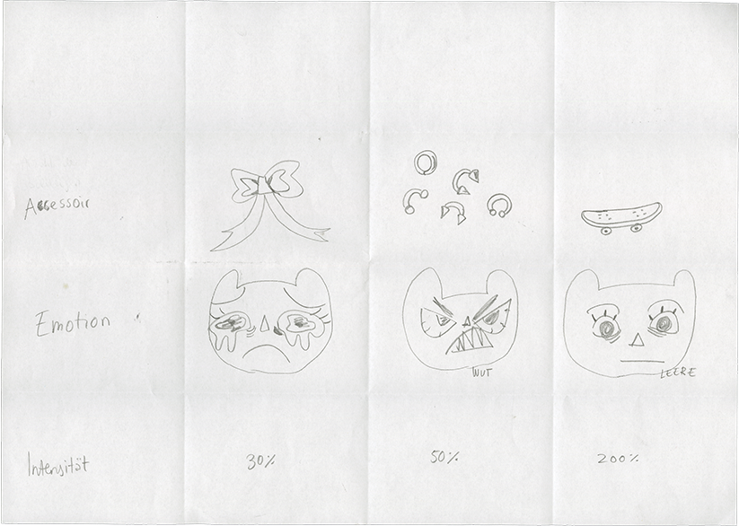
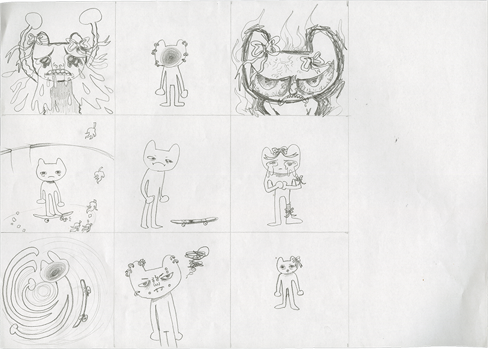
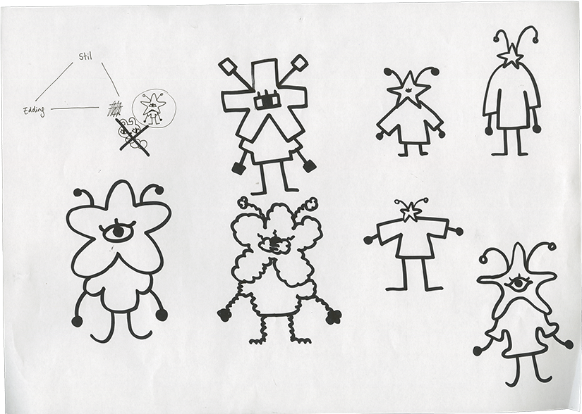
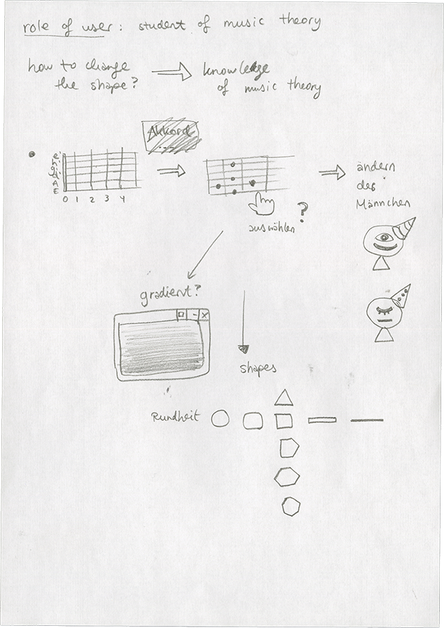
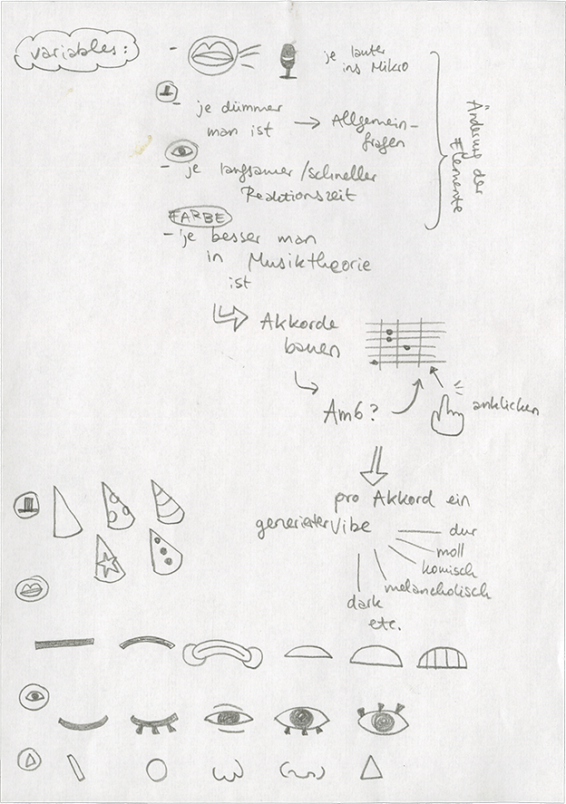
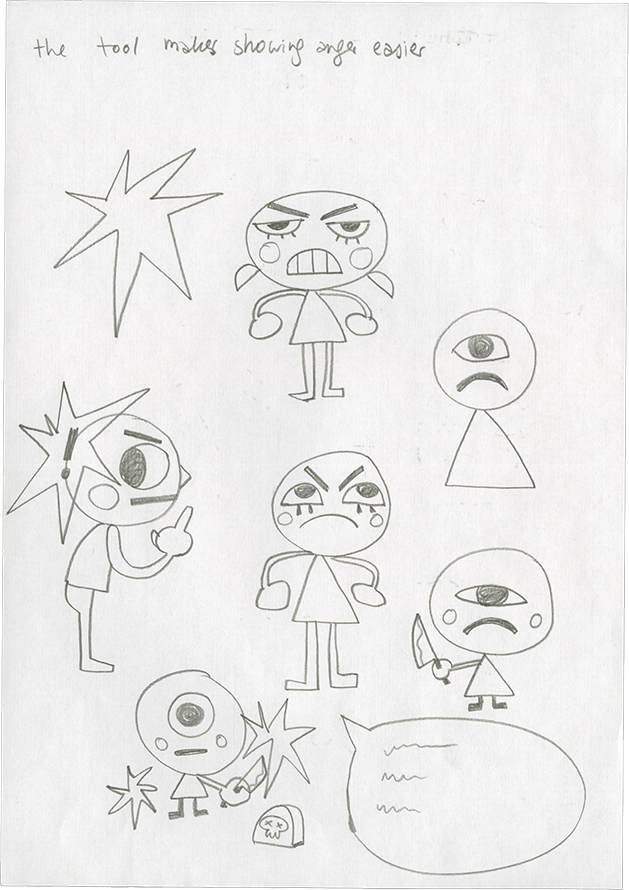
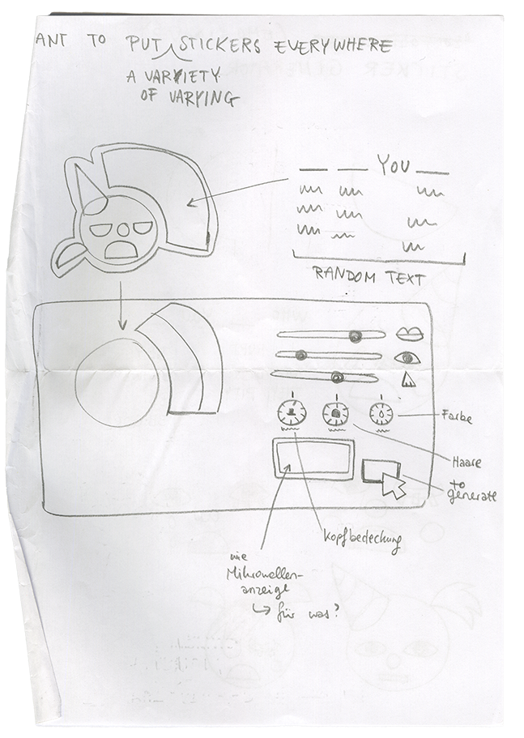

Um Variablen und Parameter im Programmieren zu verstehen, bekamen wir wieder analoge Aufgaben, die sehr halfen, das Prinzip nachzuvollziehen. Die Magic Triangle Übung war für mich eine große Bereicherung. Es war ein gutes Tool, neue Ausdrucksweisen im eigenen Gestalten zu finden. Sich Limitationen zu setzen und innerhalb dieser so viel wie möglich Variation und neue Ansätze auszuprobieren. Mittels verschiedenen Writing Prompts sammelten wir Ideen und mögliche Konzepte, die dann zu unserem Digital Drawing Tool werden sollten. Ich merkte schnell, wie viele Ideen kommen,
wenn man sich dann mal hinsetzt und mithilfe dieser Writing Prompts und beschränkter Zeit einfach erste Ideen hinkritzelt, ohne sich direkt zu viel zu verzetteln. Bei mir stellte sich dann oft die Frage, wie oder ob meine Idee (für unser Level) umsetzbar ist. Oder viel zu Aufwändig wäre? Auf jeden Fall habe ich jetzt immer noch so einige Ideen und Skizzen, die ich in der Zukunft umsetzen könnte. Ich schätze es sehr, jetzt mehr mit Tools wie HTML und CSS (und JavaScript) arbeiten zu können und dies mit
meinen eigenen Interessen zu kombinieren. So könnte ich mir auch meine eigenen Lernprogramme basteln und allein schon im Aufbauen viel von dem Material lernen. Gleichzeitig möchte ich auch nicht so viel KI benutzen, da es einfach sehr in Konflikt steht zu meinem eigenen ethischen Kompass. Exzessiver Energie- und Wasserverbrauch, Copyright Probleme, Bau von rieeeesig gigantischen Rechenzentren in der Natur. Und dabei haben Entwickler:innen auch lange vor KI schon so viel Beeindruckendes geschafft. Wieso brauchen wir das dann? (Abgesehen für Fortschritte in der Medizin?)






